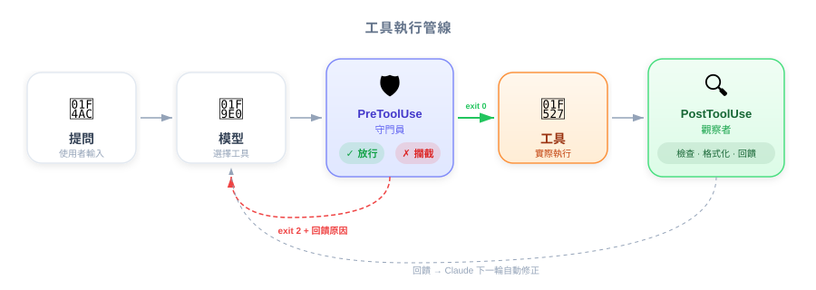
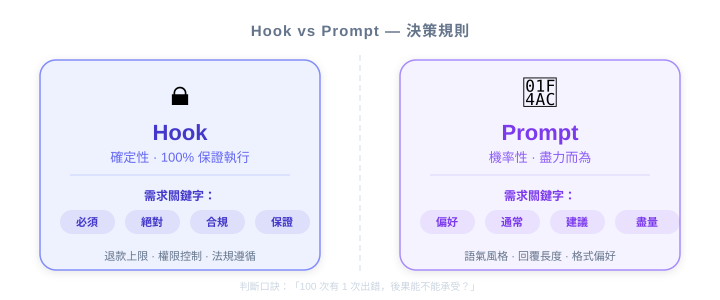

| 项目 | 内容 |
|---|---|
| 考试对应 | D3 — Claude Code Configuration & Workflows（占 20%） |
| Task Statements | 3.2（custom commands & hooks）、1.5（Agent SDK hooks） |
| 课程来源 | claude-code-in-action / 05-hooks / Lesson 14 |
Hooks 是 Claude Code 的「品管关卡」和「自动化触发器」。把它想成产品里的 business rule engine：在 AI 行动之前可以拦截审核（Pre），行动之后可以触发品质检查（Post）。PM 需要理解这个机制，因为它决定了「哪些 AI 行为是可以被保证的」vs「哪些只是尽力而为」。

作为 PM，你不需要自己写 hook，但你需要知道：
这直接影响你写 PRD 时的 acceptance criteria 和 risk assessment。
| PreToolUse Hook | PostToolUse Hook | Prompt Instruction | |
|---|---|---|---|
| 类比 | 机场安检 — 不符合就不能登机 | 落地后海关 — 已入境但可补验 | 机上广播「请系安全带」 |
| 保证程度 | 100% 确定会执行 | 100% 确定会执行 | 95-99%（AI 可能忽略） |
| 能阻止吗？ | 可以阻止行动 | 不能（已发生），但可以善后 | 不能保证 |
| 适用场景 | 合规、安全、权限控制 | 品质检查、格式化、通知 | 风格偏好、语气建议 |
🎯 考试核心哲学（PM 必记）
- Architecture > Prompt — 能用结构解决的，不要靠提示
- Deterministic > Probabilistic — 能用程序保证的，不要靠 AI 自觉

你在规划一个 AI 客服系统，需求如下：
| 需求 | 实现方式 | 为什么 |
|---|---|---|
| 退款 > $500 必须人工审核 | PreToolUse hook — 拦截 process_refund，金额超标就 block 并转人工 |
合规需求，不能有任何漏网之鱼 |
| 回复语气要友善 | Prompt instruction | 偏好性需求，偶尔偏差可接受 |
| 每次回复后记录到 CRM | PostToolUse hook — 回复完自动写入 | 流程自动化，保证每次都执行 |
| 优先推荐自助方案 | Prompt instruction | 策略偏好，有弹性空间 |
💡 PM 决策框架
写 PRD 时问自己——「如果 AI 在这个行为上 100 次有 1 次出错，后果是什么？」
- 后果严重（财务损失、合规违规）→ 必须用 hook
- 后果轻微（语气稍差、格式不一致）→ prompt instruction 足够
Hooks 有三层设定，这对 PM 来说很重要，因为它决定了团队治理：
| 层级 | 谁管 | 典型用途 | PM 关心的 |
|---|---|---|---|
Global (~/.claude/settings.json) |
个人开发者 | 个人偏好（自动 format） | 不可控，每人不同 |
Project shared (.claude/settings.json) |
Tech Lead / 团队 | 团队标准（lint、测试） | 可以要求团队统一 |
Project local (.claude/settings.local.json) |
个人 | 个人覆写 | 无法强制 |
💡 PM Takeaway
如果你的 acceptance criteria 需要某个 hook 生效，确保它在 Project shared 层级，不是靠个人设定。
Hooks 在考试中跨多个 Domain 出现：
| Domain | Hooks 怎么考 |
|---|---|
| D1 Agentic Architecture (27%) | Agent SDK 的 hook 机制 — PostToolUse 做 data normalization、PreToolUse 做 policy enforcement |
| D3 Claude Code Config (20%) | Settings hierarchy、/hooks command、matcher syntax |
| D5 Reliability (15%) | Hook 作为 validation gate，确保 pipeline step 之间的品质 |
讲师影片中有几个 PM 该注意的 nuance：
/src/auth.ts，内容是..."。这意味着 hook 可以做非常精细的判断你的 AI 客服 agent 处理退货和退款。公司政策规定：任何财务操作前必须验证身份。目前这个规则是透过 system prompt 指示来 enforce。有客户回报收到退款时没有被要求验证身份。建议的修正方式是什么？
get_customer 回传已验证状态前，block process_refund你的团队把 Claude Code 整合到 CI pipeline 做自动化 PR review。工程师反映 Claude 有时候会修改 migration 档案，导致部署问题。你会建议什么？
migrations/ 目录的 Write/Edit 操作一个 coordinator agent 将研究任务分派给多个 subagent。不同的 backend API 回传不同格式的日期（Unix timestamp、ISO 8601、locale-specific string）。synthesis subagent 经常误解日期。最佳方案是什么？